install.packages("ellmer")10 IDEs além do RStudio
E ferramentas de IA
A última aula do curso foi dedicada para conversar sobre as dúvidas. Durante essa aula, dois temas foram mais discutidos: outras possibilidades de ambiente de desenvolvimento integrado (IDE) como o VS Code e o Positron, e a utilização de ferramentas de inteligência artificial (IA) nessas IDEs.
Neste contexto, utilizaremos o termo IA como sinônimo de ferramentas que utilizam large language models (LLMs) para auxiliar na escrita de códigos. Ou seja: ferramentas que fazem sugestões de códigos, apresentam um chat onde é possível fazer perguntas e obter sugestão de blocos de código, etc.
A seguir, elencaremos cada uma das IDEs discutidas e as principais ferramentas de IA que podem ser utilizadas em cada uma delas.
10.1 Cuidados ao utilizar ferramentas de IA
Antes de comentar sobre as ferramentas de IA, é importante lembrar que a utilização de ferramentas de IA em ambientes de desenvolvimento pode apresentar riscos de segurança e privacidade.
Para evitar problemas, leia os termos de uso e a política de privacidade das ferramentas de IA que você está utilizando. Se você está usando uma ferramenta de IA que acessa a internet, é importante ter cuidado com os dados que você está compartilhando.
Confira se existe alguma configuração de privacidade que você pode ajustar.
Evite utilizar ferramentas de IA para escrever códigos que envolvam dados sensíveis.
Não compartilhe códigos, dados, textos ou qualquer outro formato que tenha informações sensíveis ou confidenciais com ferramentas de IA.
Essas recomendações não são exaustivas: é importante tomar muito cuidado ao lidar com dados sensíveis e confidenciais, e sempre buscar informações sobre a segurança e privacidade das ferramentas que você está utilizando. Converse com pessoas que trabalham com você, com a equipe de TI e de segurança da sua instituição, e busque informações sobre as práticas que a instituição tem recomendado para lidar com o uso de ferramentas de IA.
10.2 RStudio
Neste curso e no curso de introdução, utilizamos o RStudio (da Posit) para programar em R.
O RStudio é a IDE mais utilizada para programar em R, e foi criada para isso: ser um ambiente integrado para programar em R.
Dentre as ferramentas de IA que podem ser utilizadas no RStudio, destacamos o GitHub Copilot.
O GitHub Copilot originalmente apresenta duas funcionalidades: sugestão de códigos enquanto escrevemos, e o Copilot Chat (similar ao ChatGPT). Entretanto, no RStudio apenas a sugestão de códigos está disponível.
Para ativar o Copilot no RStudio, é necessário acessar o menu Tools > Global Options > Copilot e selecionar a opção Enable GitHub Copilot. Se o menu do Copilot não aparecer, significa que o RStudio está desatualizado1.
Será necessário fazer a autentição com a sua conta do GitHub.
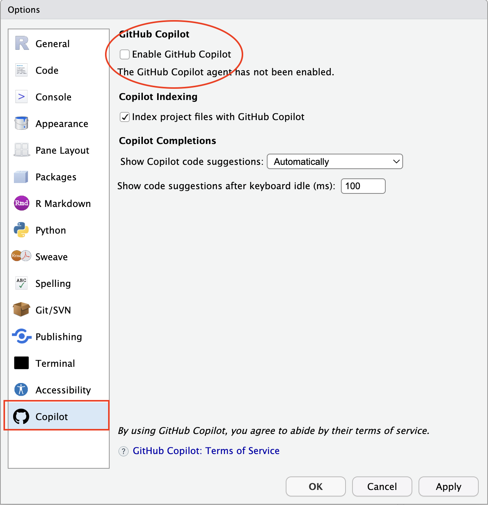
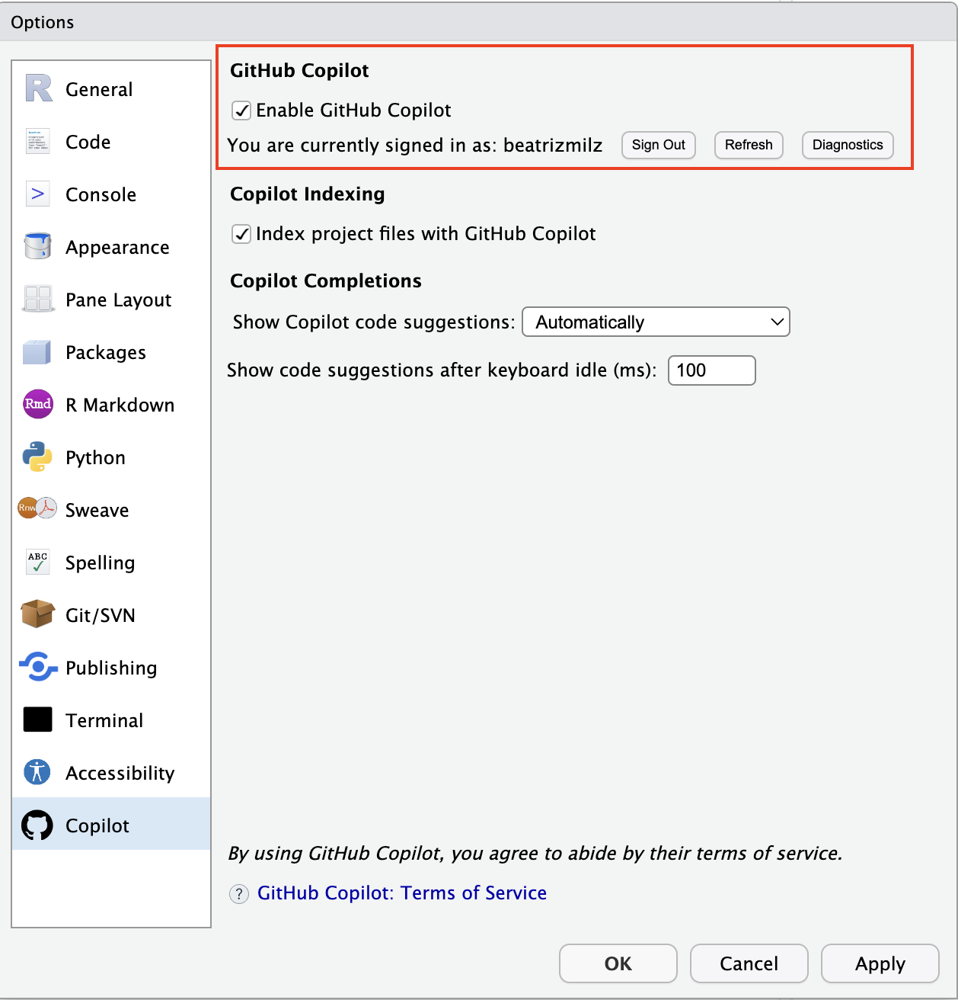
Depois de ativar o Copilot, você verá as sugestões enquanto escreve o código no RStudio. Para utilizar uma sugestão, basta pressionar Tab para aceitar a sugestão.
Mas atenção: o Copilot pode sugerir códigos que não estão corretos, então é importante sempre revisar o código gerado, e entender o que ele está fazendo.
No exemplo abaixo, comecei carregando dois pacotes e com o nome de um dataset (dados::pinguins), e o Copilot sugeriu o código para criar um gráfico. Porém ao executar o código, um erro foi gerado pois o Copilot errou o nome da variável. Depois de corrigir o nome da variável, o gráfico foi gerado corretamente:
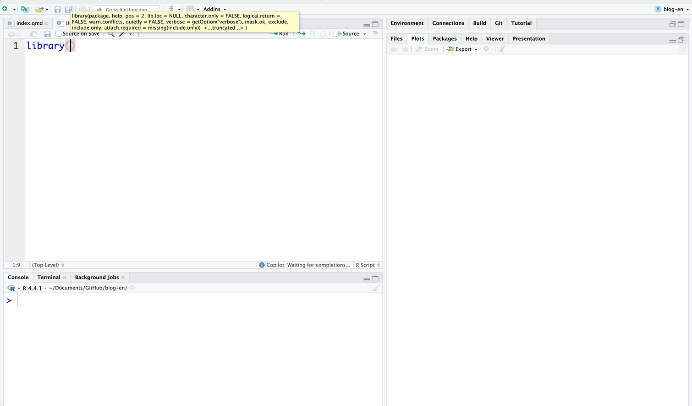
Uma dica para evitar o erro acima é colocar o resultado da função dplyr::glimpse() como comentário (#) no Script. Assim, o Copilot terá o contexto de quais são as variáveis do dataset, e poderá fazer sugestões com menos erros:
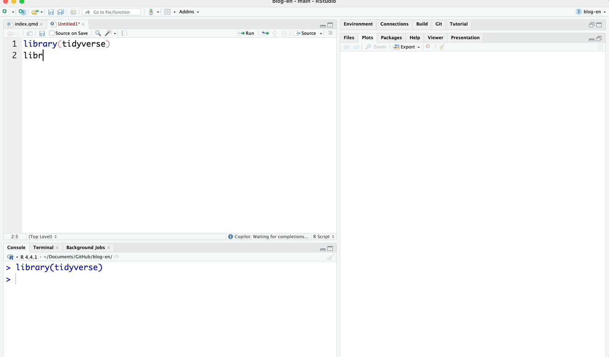
Em projetos e scripts com mais código, o Copilot tende a fazer sugestões melhores, por ter mais contexto.
Outra dica é escrever como comentários o que você quer fazer, e o Copilot faz a sugestão do código.
Confira o manual do RStudio para mais informações sobre o GitHub Copilot no RStudio.
10.2.1 {gptstudio}
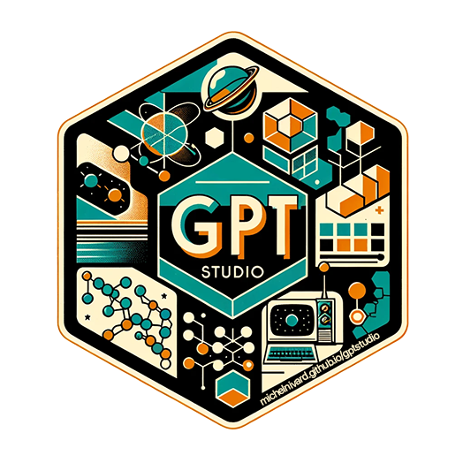
O pacote {gptstudio} foi criado para facilitar o uso de LLMs quando trabalhamos com R.
Ele também funciona com outras IDEs, porém o RStudio é a IDE que apresenta a melhor integração com o pacote.
A ideia do pacote é que podemos utilizar o chat (por exemplo, do GPT) diretamente do RStudio com uma extensão (Addin). Entretanto, esse Addin funciona com Shiny, o que faz com que a sessão do R fique ocupada enquanto o chat está aberto. Ou seja: não é possível utilizar o chat e continuar a executar códigos em R ao mesmo tempo.

10.3 Visual Studio Code (VS Code)
O Visual Studio Code (VS Code) é uma IDE desenvolvida pela Microsoft, e é uma das IDEs mais populares para programar em diversas linguagens de programação. O VS Code apresenta uma loja de extensões, onde é possível instalar diversas extensões para facilitar o desenvolvimento em diversas linguagens.
Mas atenção: o VS Code não é a IDE “mais fácil” para programar em R. Existem várias configurações necessárias para programar em R no VS Code, e a experiência de programar em R no RStudio é mais amigável e simples para quem está começando.
Para saber mais sobre o uso do VS Code com R, consulte:
10.3.1 GitHub Copilot no VS Code
O VS Code oferece a experiência mais completa de integração com o GitHub Copilot2.
Para instalar o GitHub Copilot no VS Code, é necessário procurar por “GitHub Copilot” na loja de extensões, e instalar a extensão oficial.
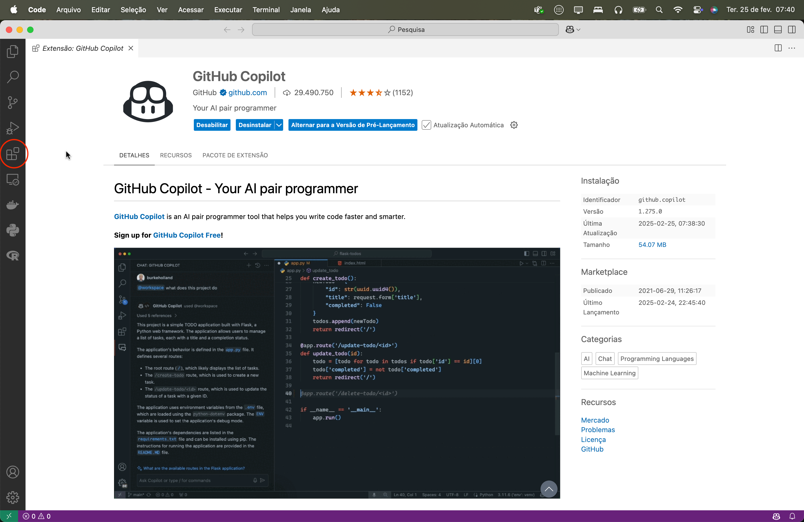
Depois de instalar a extensão, o botão do Copilot ficará disponível ao lado da barra de pesquisa (no menu superior da tela):
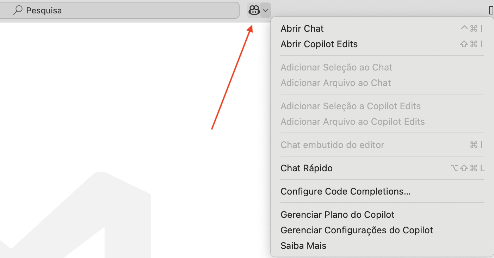
Com este botão, é possível acessar o Chat do Copilot no VS Code:
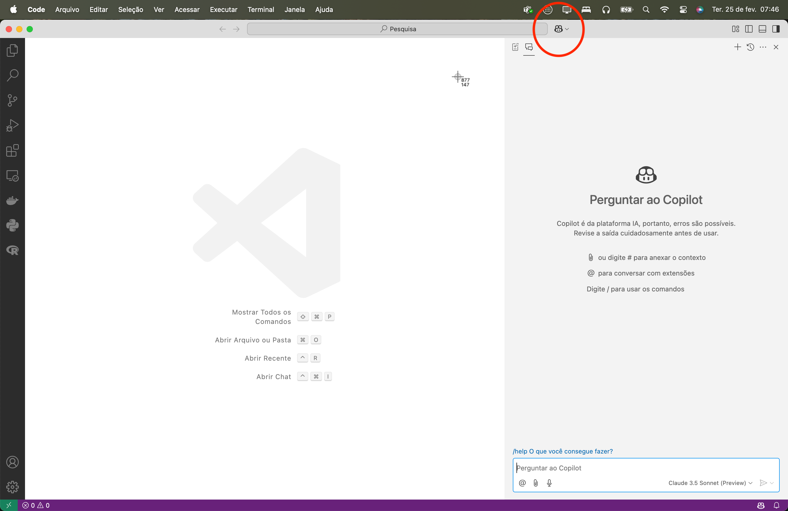
O Chat do Copilot é a minha ferramenta favorita no VS Code, pois podemos fazer referência a arquivos do nosso projeto.
Exemplo de uso do Chat do Copilot, usando um arquivo Quarto (.qmd):
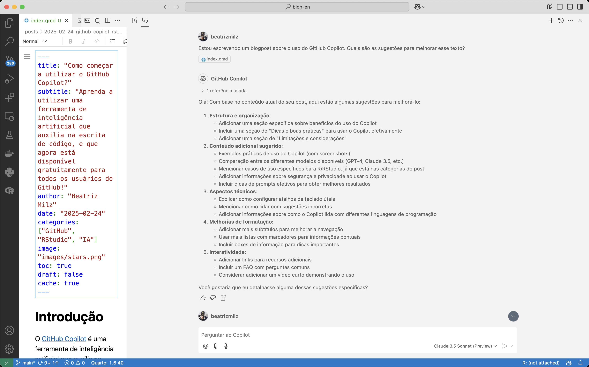
Perceba que o Copilot inclusive gera sugestões de blocos de códigos que podemos utilizar (neste caso, como o arquivo contém textos com marcações em Markdown, a sugestão é em Markdown):
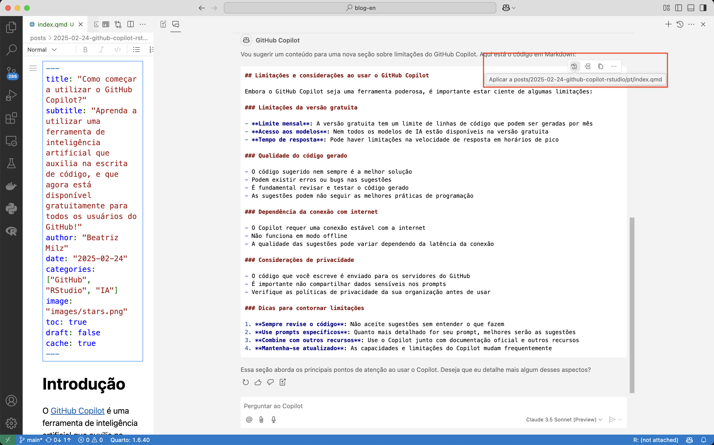
A funcionalidade de sugestão de códigos também existe, e é similar ao que vimos no RStudio.
Dentro do script, também podemos usar o atalho Ctrl/Command + I para abrir uma caixa de texto, e escrever um prompt para o Copilot. O Copilot irá sugerir códigos baseados no prompt que você escreveu, diretamente no script.
10.3.2 Outras extensões
Como mencionado anteriormente, o VS Code possui uma loja de extensões, onde é possível instalar diversas extensões para facilitar o desenvolvimento em diversas linguagens.
Existem outras extensões que permitem utilizar ferramentas de IA no VS Code, mas para evitar a repetição de informações, apresentamos uma lista de extensões que permitem utilizar ferramentas de IA no VS Code/Positron no tópico sobre o Positron.
10.4 Positron
Um breve contexto histórico: até 2022, a empresa que desenvolvia o RStudio era chamada de… RStudio PBC. Em 2022, a empresa mudou de nome para Posit. Essa mudança de nome foi feita para refletir a expansão da empresa para além da IDE RStudio. Desde então, a Posit tem desenvolvido novas ferramentas e produtos para usar além do R, como o Positron.
O Positron é uma IDE que permite programar com Python e R. Ele é uma alternativa ao RStudio e ao VS Code, e é uma opção para quem programa em várias linguagens de programação.
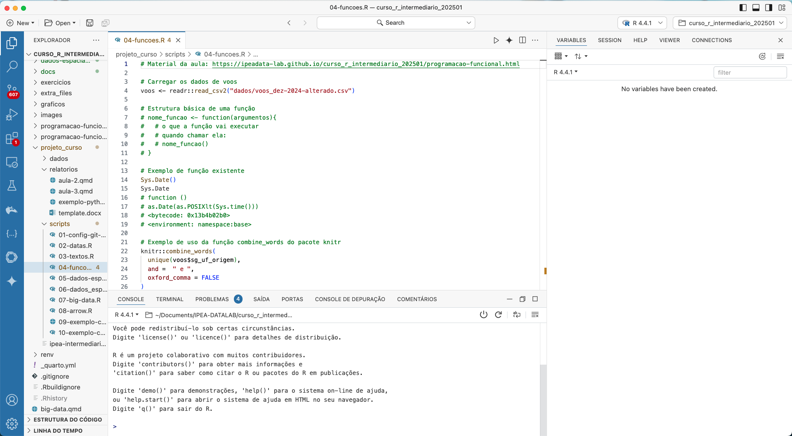
O Positron é visualmente parecido com o VS Code, pois é baseado no CODE OSS (a versão open-source do VS Code). Porém, o Positron foi desenvolvido para ser usado para análise de dados com R e Python.
Comentamos anteriormente que o VS Code apresenta algumas dificuldades para programar em R: esse não é o caso do Positron, pois foi desenvolvido para facilitar o uso do R e Python. No canto superior direito da tela existe um botão que permite alternar entre R e Python:
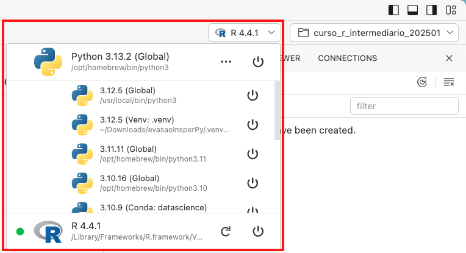
Outra coisa muito legal é que o Positron tem acesso à loja de extensões do VS Code, então a maioria das extensões citadas anteriormente para o VS Code podem ser utilizadas no Positron.
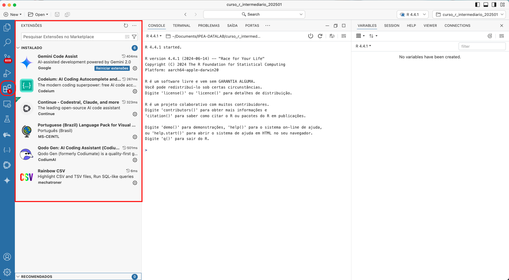
Live da Curso-R: Positron: o filho do RStudio com o VS Code com Caio Lente.
10.4.1 GitHub Copilot no Positron
Anteriormente, comentamos que:
O VS Code oferece a experiência mais completa de integração com o GitHub Copilot, e
o Positron é baseado no CODE OSS, a versão open-source do VS Code.
Então a lógica seria que o GitHub Copilot estivesse disponível de forma completa no Positron, certo? Errado.
Até o momento da produção deste texto, o GitHub Copilot não está disponível na loja de extensões Positron 😭
Como comentamos na aula sobre Git e GitHub, muitas ferramentas são desenvolvidas por lá, e o Positron é uma delas. Então fizemos uma busca nas issues do repositório a discussão sobre o GitHub Copilot no Positron, e encontramos algumas issues que abordam o assunto.
Pontos principais:
Junho/2024 - #476: A extensão do GitHub Copilot é apenas oficialmente suportada (e licenciada para funcionar) dentro do Visual Studio Code (a versão comercial da Microsoft, não a versão Open Source), então a autenticação não funcionará no Positron. A Posit está trabalhando em uma solução para isso.
Julho/2024 - #3871: “Nós gostaríamos de ter suporte para o GitHub Copilot no futuro, mas por enquanto existem muitas extensões que fornecem Chat, Completions Inline, e outras modalidades de uso de GenAI.” - Tom Mock (que trabalha na Posit)
Em resumo:
AvisoGitHub Copilot no Positron (resumo)
Existe limitações de licença para o uso do GitHub Copilot no Positron. A equipe da Positron está trabalhando para encontrar uma solução para isso. Por enquanto, eles recomendam explorar outras extensões que fornecem funcionalidades similares ao Copilot.
10.4.2 Outras extensões
Como mencionado anteriormente, o Positron tem acesso à loja de extensões do VS Code, então a maioria das extensões citadas anteriormente para o VS Code podem ser utilizadas no Positron.
A seguir, temos uma lista de extensões que estão disponíveis na loja de extensões do Positron (e do VS Code), e que permitem utilizar ferramentas de IA no Positron:
- Gemini Code Assist da Google
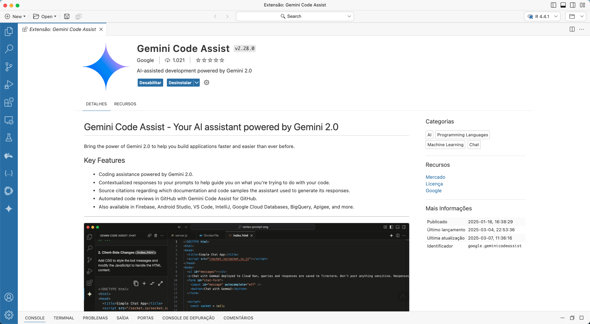
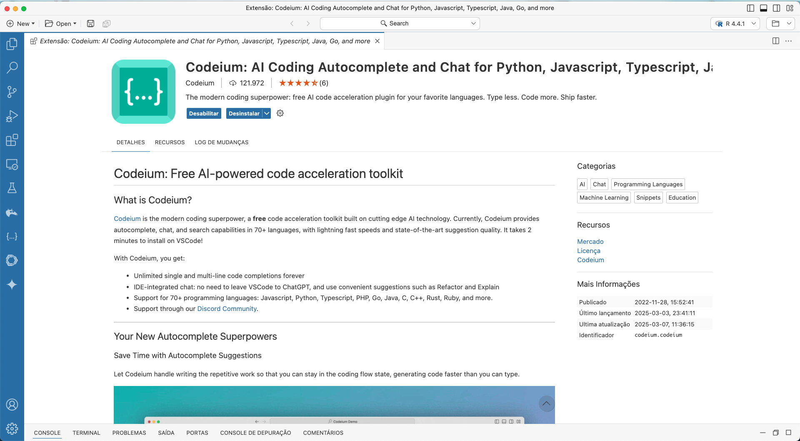
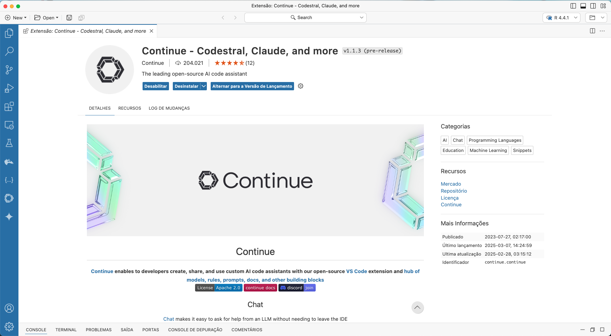
AvisoQual extensão baixar no Positron/VS Code?
As lojas de extensão do VS Code e do Positron são muito grandes, e existem muitas extensões disponíveis.
Quando pesquisamos algum tema, MUITAS extensões podem aparecer. Nem sempre as extensões são boas ou confiáveis… Então como escolher?
Algumas dicas para ajudar a escolher uma extensão:
- Veja quem é o desenvolvedor da extensão (ou empresa responsável). Por exemplo, a extensão do Gemini Code Assist é da Google, então é uma extensão confiável.
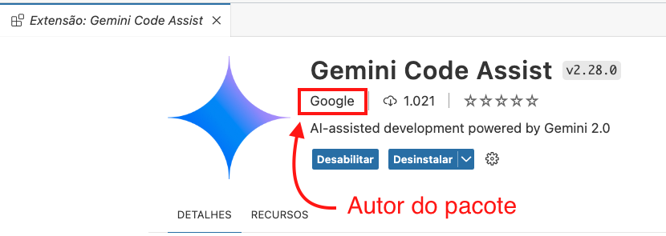
- Veja a popularidade da extensão. Extensões mais populares tendem a ser mais confiáveis: mais pessoas já testaram, aprovaram e recomendaram por aí. Dentre as que citamos anteriormente, a Continue e Codeium são as mais populares: até agora, mais de 204 mil pessoas já baixaram a Continue, e 121 mil já baixaram o Codeium. Mas atenção: ter menos downloads não significa necessariamente que a extensão seja ruim! Ela pode ser mais recente, como é o caso do Gemini Code Assist.
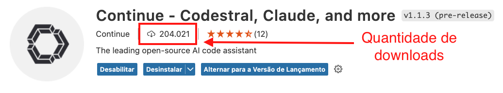
- Veja também quais extensões outras pessoas da sua área estão utilizando!
10.5 Pacotes de IA para R (independentes da IDE)
Até agora, comentamos de ferramentas de IA que podem ser utilizadas nas IDEs RStudio, VS Code e Positron.
Mas existem pacotes de R que permitem utilizar ferramentas de IA diretamente no R, sem depender de uma IDE específica.
Importante
Este material foi finalizado em fevereiro/2025, porém esse assunto está muito em alta!
Recomendamos conferir este material que lista várias ferramentas e pacotes para usar com R: Large Language Model tools for R
10.5.1 {ellmer}
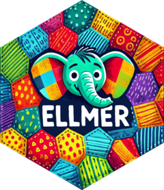
Com o avanço dos large language models (LLM), diversos pacotes foram criados para facilitar o uso desses modelos no R. Um exemplo é o pacote {openai}, que permite o uso dos modelos da OpenAI (como o GPT) no R. Porém logo muitos provedores foram criados, e cada um com sua API e forma de uso.
O pacote {ellmer} foi criado para facilitar o uso de modelos LLM no partir do R, utilizando uma interface unificada para diversos provedores!
Ele apresenta suporte para vários provedores de LLM, como OpenAI, Ollama, Google Gemini, DeepSeek, Claude (Anthropic), entre outros. Você pode consultar a lista completa na documentação do pacote.
Para utilizar o pacote, é necessário 1) instalar e 2) configurar a chave de acesso ao modelo LLM como uma variável de ambiente.
- Instalar:
- Configurar a chave de acesso ao modelo LLM como uma variável de ambiente:
Abra o arquivo .Renviron e adicione a chave de acesso ao modelo LLM. Para abrir o arquivo, utilize a função:
usethis::edit_r_environ()Adicione nesse arquivo a chave, seguindo o padrão NOME_KEY="VALOR_KEY". No caso da Open AI, o nome da chave deve ser OPENAI_API_KEY. Exemplo:
OPENAI_API_KEY="...."Após adicionar a API Key, salve o arquivo e reinicie a sessão do R antes de continuar.
Agora, você pode utilizar o pacote para fazer perguntas ao modelo LLM. Por exemplo, para fazer uma pergunta ao modelo GPT-4 da OpenAI, precisamos primeiramente iniciar o chat:
chat_criado <- ellmer::chat_openai(model = "gpt-4o")O objeto chat_criado é diferente dos tipos de objetos que exploramos no curso: ele é da classe R6:
class(chat_criado)
# [1] "Chat" "R6" Isso significa que esse objeto tem métodos específicos que podemos utilizar de forma similar a funções, porém os métodos são como elementos de uma lista: acessamos usando o $.
Para saber quais são os métodos disponíveis, podemos usar a função names():
names(chat_criado)
# [1] ".__enclos_env__" "clone" "register_tool"
# [4] "stream_async" "stream" "chat_async"
# [7] "extract_data_async" "extract_data" "chat"
# [10] "last_turn" "tokens" "set_system_prompt"
# [13] "get_model" "get_system_prompt" "set_turns"
# [16] "get_turns" "initialize" Para fazer uma pergunta ao chat, podemos usar o método chat(). Vamos fazer alguns exemplos nada sérios de perguntas:
resposta <- chat$chat("Quem é beatriz milz?", echo = FALSE)
resposta“Beatriz Milz é uma cientista de dados e influenciadora digital brasileira conhecida por seu trabalho na divulgação científica e educação sobre ciência de dados e programação. Ela possui um canal no YouTube e outras redes sociais onde compartilha conteúdos relacionados a análise de dados, R e Python, entre outros tópicos técnicos e profissionais. Beatriz é reconhecida por sua habilidade em ensinar conceitos complexos de forma acessível e por fomentar a inclusão e diversidade na área de tecnologia.”
Eu (Beatriz) não concordo na parte de “influenciadora digital”, mas acertou algumas coisas! Vamos tentar outro prompt?
resposta_2 <- chat$chat("Quem é Rafael H. M. Pereira ?", echo = FALSE)
resposta_2“Rafael H. M. Pereira é um pesquisador conhecido por seu trabalho em áreas como geografia urbana, mobilidade urbana e justiça social. Ele tem uma formação interdisciplinar que combina geografia, planejamento urbano e questões sociais, e frequentemente utiliza métodos quantitativos e ferramentas de ciência de dados em suas pesquisas. Seus estudos muitas vezes focam em entender como políticas urbanas e de transporte podem impactar diversos grupos sociais de maneira desigual, avaliando acessibilidade e equidade. Rafael H. M. Pereira é ativo em publicações acadêmicas e pode estar associado a instituições de pesquisa ou ensino superior.”
Parece que o modelo acertou mais no caso do Rafael! 😅
Vamos fazer uma pergunta polêmica:
resposta_3 <- chat$chat("Qual é a melhor linguagem de programação para analisar dados?", echo = FALSE)
resposta_3“A escolha da melhor linguagem de programação para análise de dados pode depender de vários fatores, incluindo o ambiente de trabalho, os requisitos específicos do projeto e a experiência pessoal. No entanto, algumas linguagens se destacam na comunidade de análise de dados: 1. Python: É uma das linguagens mais populares para análise de dados. Possui uma vasta gama de bibliotecas e ferramentas, como Pandas, NumPy, Matplotlib, Seaborn, SciPy, Scikit-learn, entre outras, que facilitam a manipulação, visualização e modelagem de dados. 2. R: Muito utilizado em estatística e ciência de dados, R é conhecido por suas poderosas capacidades de análise estatística e visualização gráfica. Pacotes como dplyr, ggplot2 e tidyr tornam o R uma escolha excelente para análise de dados exploratória e estatística. 3. SQL: Embora não seja uma linguagem de programação no sentido tradicional, SQL é essencial para consultar e manipular dados em bancos de dados relacionais. É uma habilidade importante para qualquer analista de dados. 4. Julia: É uma linguagem mais recente que foi projetada para alta performance em cálculos numéricos. Está ganhando popularidade em análise de dados e ciências computacionais por sua velocidade e eficiência. A escolha entre essas linguagens pode ser guiada pelo tipo de análise que você pretende realizar, a comunidade de apoio (fóruns, pacotes, recursos educacionais) e as ferramentas já em uso na sua organização ou equipe. Python e R são geralmente as escolhas mais comuns devido à sua versatilidade e ampla adoção na indústria e na academia.”
O modelo não quis participar da briga das torcidas de futebol dos times Python e R! 😅
Esse breve (e ilustrativo) exemplo mostra como podemos utilizar o pacote {ellmer} para fazer perguntas para ferramentas de LLM diretamente do R.
10.5.2 {chores}
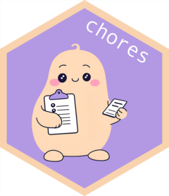
O pacote {chores} (anteriormente chamado de pal) é um pacote que fornece assistentes de LLM projetados para ajudar a completar tarefas repetitivas.
Com esse pacote, você pode configurar um atalho do teclado para iniciar o assistente. Depois disso, você pode selecionar o código e pressionar o atalho do teclado para que o assistente te ajude na tarefa desejada.
A documentação do pacote apresenta um GIF que mostra como o pacote funciona:
10.5.3 {gander}
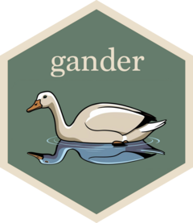
O pacote {gander} possibilita utilizar o ellmer para interagir com assistentes de LLM diretamente do RStudio em um chat.
Neste caso, criamos um atalho para iniciar o chat a partir de um código selecionado, e ele consegue ter o contexto dos códigos do projeto em que estamos trabalhando e os objetos disponíveis no Environment.
A documentação do pacote apresenta um GIF que mostra como o pacote funciona:
Para usar o pacote, existem alguns passos que precisam ser seguidos. Primeiro, instale os pacotes gander e ellmer:
install.packages("ellmer")
install.packages("gander")Configure o atalho do teclado para iniciar o chat: isso depende da IDE que está usando. A documentação detalha como fazer isso no RStudio e no Positron. No RStudio, é necessário acessar as configurações de atalho: Tools > Modify Keyboard Shortcuts, e então pesquisar por gander. Depois de encontrar o atalho, você pode configurar o atalho que deseja utilizar. A documentação sugere usar o atalho Ctrl + Alt + G (ou Cmd + Control + G no macOS).
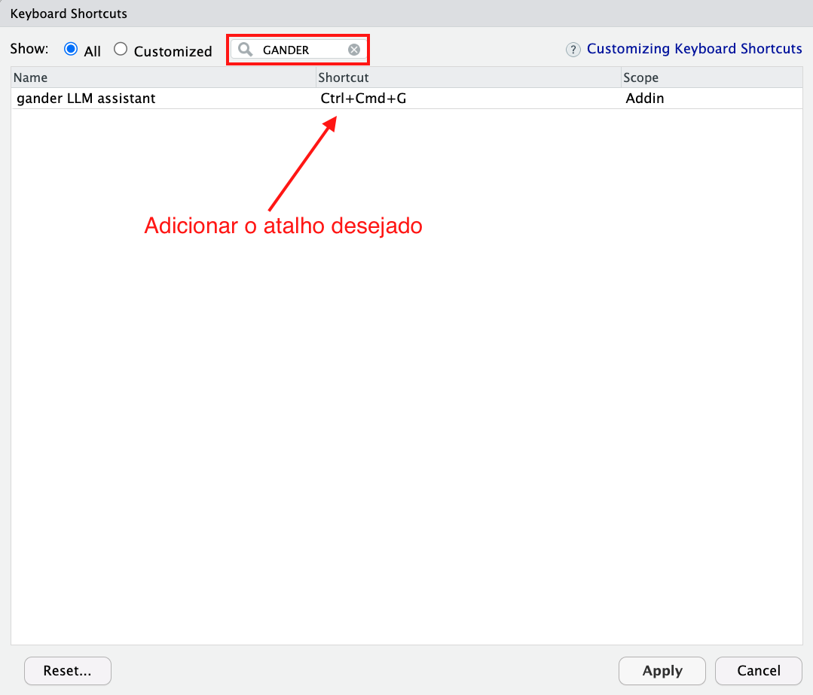
Se tentarmos usar o atalho agora, veremos essa mensagem:
! gander requires configuring an ellmer Chat with the
.gander_chat option.
ℹ Set e.g. `options(.gander_chat =
ellmer::chat_claude())` in your ~/.Rprofile and restart
R.
ℹ See "Choosing a model" in `vignette("gander", package =
"gander")` to learn more.Existem mais configurações que precisam ser feitas para que o pacote funcione corretamente!
Salve a chave de acesso ao modelo LLM como uma variável de ambiente. Para isso, adicione a chave de acesso ao modelo LLM no arquivo .Renviron (para abrir este arquivo, você pode usar a função usethis::edit_r_environ().
usethis::edit_r_environ()O nome da chave depende do provedor do modelo LLM. Por exemplo, para a OpenAI, o nome da chave deve ser OPENAI_API_KEY. Lembrando que no arquivo .Renviron a chave deve seguir o padrão NOME_KEY="VALOR_KEY". Exemplo:
OPENAI_API_KEY="..."Reinicie a sessão do R para que a variável de ambiente seja encontrada.
Configure a opção .gander_chat para usar o modelo LLM que deseja. Por exemplo, para usar o modelo da OpenAI, você pode configurar da seguinte forma:
options(.gander_chat = ellmer::chat_openai())
#> Using model = "gpt-4o".Agora, você pode utilizar o gander! Selecione o código desejado e pressionando o atalho para iniciar o chat. O chat será aberto com o contexto do código selecionado e do ambiente do RStudio.
Obs: o atalho criado é uma chamada para a função gander::gander_addin(), que também pode ser acessada no menu de Addins do RStudio. Se você preferir, pode acessar o chat por lá.
A função gander::gander_peek() permite ter informações sobre o contexto usado pelo assistente de LLM. No exemplo abaixo, eu criei um script carregando o pacote {tidyverse}, e solicitei que ele gerasse o código para criar um gráfico em {ggplot2} com os dados do dataset starwars. O assistente respondeu com o código para criar um gráfico de dispersão com os dados de altura e peso dos personagens do Star Wars:
gander::gander_peek()
# <Chat turns=3 tokens=166/25>
# ── system ──────────────────────────────────────────
# You are a helpful but terse R data scientist. When
# asked for code, provide only the requested code, no
# exposition nor backticks, unless explicitly asked.
# Always provide a minimal solution and refrain from
# unnecessary additions. Use tidyverse style and,
# when relevant, tidyverse packages. For example,
# when asked to plot something, use ggplot2, or when
# asked to transform data, using dplyr and/or tidyr
# unless explicitly instructed otherwise.
# ── user ────────────────────────────────────────────
# Up to this point, the contents of my file reads:
#
# library(tidyverse)
#
# Now, crie um gráfico com ggplot2 usando os dados do
# starwars:
#
# starwars
#
# For context, the rest of the file reads:
#
# starwars
# ── assistant ───────────────────────────────────────
# ggplot(starwars, aes(x = height, y = mass)) +
# geom_point()Atualmente, o pacote funciona bem em arquivos .R, mas tem dificuldades em fornecer respostas formatadas adequadamente em arquivos .Qmd e formatos de arquivo relacionados.
10.6 Material
Alguns trechos deste texto foram adaptados do post “Como começar a utilizar o GitHub Copilot?”, escrito por Beatriz Milz.
10.7 Extra
[2025] Large Language Model tools for R - lista de ferramentas/pacotes para usar LLMs no R.
[2023] A palestra “Large Language Models no Direito” (video disponível no Youtube e código disponível no GitHub) é um exemplo de aplicação de uso de LLMs no R.
[2024]: Live da Curso-R: Positron: o filho do RStudio com o VS Code com Caio Lente.
Para atualizar o RStudio, acesse o site do RStudio Desktop para baixar o instalador mais recente.↩︎
É importante lembrar também que a GitHub também é da Microsoft.↩︎